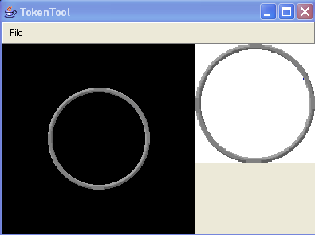

 Just drop an image onto the tokentool background to get started.
The white bordered square to the right is a preview pane, the white will actually be transparent, the grey circle will form a border around your image.
Click-drag the image around in the window to get the part of it visible that you want to stamp your token from.
Use the mouse wheel to zoom your image in and out. Ctrl-mouse wheel will zoom faster if you have a long way to go.
Drag the circle around until it frames your subject perfectly.
Ctrl-E or File->Save to save your token as a PNG file (in your maptool asset directory, of course). Or, if you're impatient like us, just drag from the "preview" onto maptool directly.